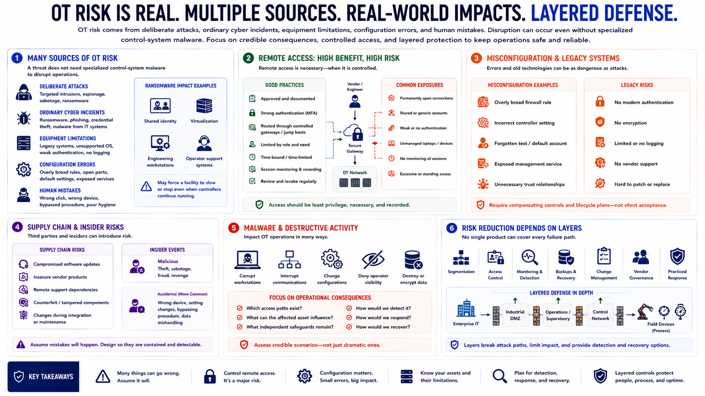

OT Threats and Risks
Connecting to LMS... Progress: in progress

Narration
OT risk comes from deliberate attacks, ordinary cyber incidents, equipment limitations, configuration errors, and human mistakes. A threat does not need specialized control-system malware to disrupt operations. Ransomware affecting shared identity, virtualization, engineering workstations, or operator support systems may force a facility to slow or stop even when controllers continue running.
Remote access is another major concern. Vendors and engineers often need legitimate access for support, but permanently open connections, shared accounts, weak authentication, unmanaged laptops, and poorly monitored sessions create avoidable exposure. Remote access should be approved, strongly authenticated, routed through controlled gateways, limited by role and time, and recorded where operationally appropriate.
Misconfiguration can be as consequential as malicious activity. An overly broad firewall rule, incorrect controller setting, forgotten test account, or exposed management service may weaken several layers of protection. Legacy systems add risk because they may lack modern authentication, encryption, logging, or vendor support. These limitations require compensating controls and lifecycle plans, not silent acceptance.
Supply chain risk includes compromised software updates, insecure vendor products, remote support dependencies, counterfeit components, and changes introduced during integration or maintenance. Insider events may be malicious, but accidental actions are more common: connecting the wrong device, changing a setting without coordination, or bypassing a procedure to restore production quickly.
Malware and destructive activity can corrupt workstations, interrupt communications, change configurations, or deny operator visibility. The risk analysis should focus on credible operational consequences rather than dramatic scenarios alone. Ask which access paths exist, what an affected asset can influence, what independent safeguards remain, and how the operation would detect and recover.
Risk reduction depends on layers. Segmentation, access control, monitoring, backups, change management, vendor governance, and practiced response each address different failure paths. No single product can compensate for an unknown inventory or an architecture that permits unnecessary access to critical control functions.